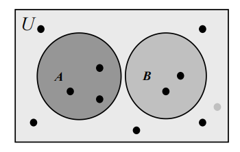
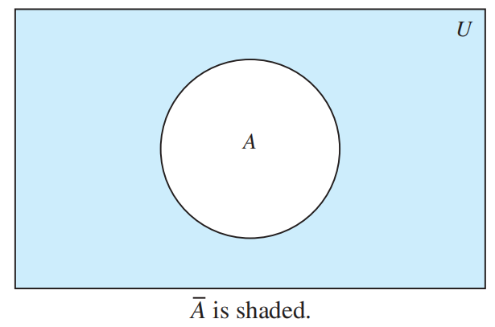
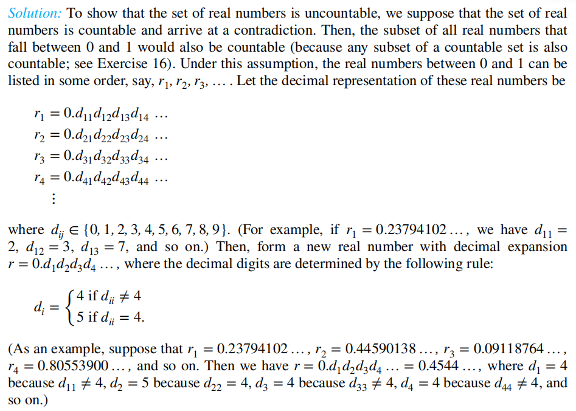

Chap 2 Basic Structures: Sets, Functions, Sequences, Sums, and Matrices
2.1 Sets
Introduction
集合(Set)：一组拥有不同对象（称为元素(element)）的无序集 \(a \in A\)：\(a\)是\(A\)中的一个元素，\(a \notin A\)：\(a\)不是\(A\)中的一个元素
注：
- 一般大写字母表示集合，小写字母表示元素
- 集合也可以作为某个集合的元素
- 集合不关注元素的 顺序 和 重复
The Description of Sets
1. 枚举法(Roster Method)：用花括号{ }包含所有元素，比如\(S = \{a, b, c, d\}\)
如果元素个数太多，可用省略号(ellipses)(...)表示
2. Set Builder：\(\{x | x \text{ has property }P\}\)，对于集合中的所有\(x\)元素，都具有\(P\)性质
数学中常用的一些集合：
- 自然数集\(\mathbf{N} = \{0, 1, 2, 3, \dots \}\)
- 整数集\(\mathbf{Z} = \{\dots, -2, -1, 0, 1, 2 \dots \}\)
- 正整数集\(\mathbf{Z^+} = \{1, 2, 3, \dots\}\)
- 有理数集\(\mathbf{Q} = \{\dfrac{p}{q} | p \in \mathbf{Z}, q \in \mathbf{Z}, \text{and } q \ne 0\}\)
- 实数集\(\mathbf{R}\)， 正实数集\(\mathbf{R^+}\)
- 复数集\(\mathbf{C}\)
3. 区间(Intervals)：
- 闭区间(Closed Interval)：\([a, b] = \{ x | a \le x \le b \}\)
- 开区间(Open Interval)：\((a, b) = \{ x | a < x < b\}\)
- 还有：\([a, b) = \{x | a \le x < b\} \quad (a, b] = \{x | a < x \le b\}\)
注：在CS中，数据类型(datatype)也是一种集合，同时也包含了一些运算的集合
相等：\(A = B\)，当且仅当\(\forall x(x \in A \leftrightarrow x \in B)\)，或者\((A \subseteq B) \wedge (B \subseteq A)\)
- 空集(Empty Set/ Null Set)：没有元素的集合，用"\(\emptyset\)"表示
- 单元素集合(Singleton Set)：只有一个元素的集合
注意：\(\emptyset \ne \{\emptyset\}\)
Veen Diagram
细节：
- 用矩形表示全集(Universal Set)\(U\)
- 矩形中的每个圆圈表示集合
- 用点表示元素 
Subsets
\(A\)是\(B\)的子集(Subset) = \(B\)是\(A\)的超集(Superset)，即\(A\)中的每个元素都是\(B\)的元素 记号：\(A \subseteq B\)或\(B \supseteq A\)，等价于\(\forall x(x \in A \rightarrow x \in B)\)
- 说明\(A \subseteq B\)：说明每个属于A的元素也属于B
- 说明\(A \nsubseteq B\)：找到一个元素\(x\)，使得\(x \in A\)但\(x \notin B\)
定理：对于每个集合\(S\)，\(\text{(i)} \emptyset \subseteq S \quad \text{(ii)} S \subseteq S\)
真子集(Proper Subset)：\(A\)是\(B\)的子集，但\(A \ne B\)，记作\(A \subset B\)。 当且仅当\(\forall x(x \in A \rightarrow x \in B) \wedge \exists x(x \in B \wedge x \notin A)\)
The Size of a Set
如果\(S\)有\(n\)个不同的元素，称\(S\)为有限集(Finite Set)，且\(n\)是\(S\)的基数(Cardinality)，记作\(|S|\)。否则认为该集合是无限的(Infinite)
Power Sets
幂集合(Power Sets)：包含集合\(S\)的==所有子集==的集合，记作\(P(S) = \{x | x \subseteq S\}\) 如果集合有\(n\)个元素，则它对应的幂集合有\(2^n\)个元素
性质：\(P(A) \subseteq P(B) \Leftrightarrow A \subseteq B\)
Cartesian Products
有序n元组(The ordered n-tuple) \((a_1, a_2, \dots, a_n)\)
有序对(Ordered pairs)：\(n = 2\)的有序n元组
注意：\((a, b) \ne (b, a)\)，除非\(a = b\)
笛卡尔积(Cartesian Products)：\(A \times B = \{(a, b) | a \in A \wedge b \in B\}\)
对于多个集合的笛卡尔积： $$ A_1 \times A_2 \times \dots A_n = {(a_1, a_2, \dots, a_n) | a_i \in A_i \text{ for } i = 1, 2, \dots, n} $$
当\(A_1 = A_2 = \dots = A_n = A\)时， $$ A_1 \times A_2 \times \dots A_n = A^n = {(a_1, a_2, \dots, a_n) | a_i \in A \text{ for } i = 1, 2, \dots, n} $$
性质：
- 如果\(|A| = m, |B| = n\)，那么\(|A \times B| = |B \times A| = mn\)
- \(A \times B \ne B \times A\)，除非\((A = \emptyset) \vee (B = \emptyset) \vee (A = B)\)
- \((A \times B) \times C \ne A \times B \times C\)
- \(A \times \emptyset = \emptyset \times A = \emptyset\)
- \((x, y) \in A \times B \Rightarrow x \in A \wedge y \in B \quad \quad (x, y) \notin A \times B \Rightarrow x \notin A \vee y \notin B\)
Using Set Notation with Quantifiers
Truth Sets and Quantifiers
真值集(Truth sets)\(P\)是指对于某个域\(D\)的所有\(x\)，都有\(P(x)\)为真，即\(\{x \in D|P(x)\}\)
- 当且仅当它的真值集\(P\)为 集合\(U\) 时，\(\forall xP(x)\)在全集域\(U\)为真
- 当且仅当它的真值集\(P\) 非空 时，\(\exists xP(x)\)在全集域\(U\)为真
Supplements(from Exercises)
罗素悖论(Russell's Paradox)：\(S = \{ x | x \notin x\}\)
2.2 Set Operations
Set Operations
- 并集(Union)：\(A \cup B = \{x|x \in A \vee x \in B\}\)

有用的规则
- \(A \subseteq A \cup B, \quad B \subseteq A \cup B\)
- \(A \subseteq C, B \subseteq C \Rightarrow A \cup B \subseteq C\)
- \(|A \cup B| \le |A| + |B|\)
- \(A \cup B = B \Leftrightarrow A \subseteq B\)
- 交集(Intersection)：\(A \cap B = \{x|x \in A \wedge x \in B\}\)
如果\(A \cap B = \emptyset\)，称为不相交(disjoint)

有用的规则
- \(A \cap B \subseteq A, \quad A \cap B \subseteq B\)
- \(C \subseteq A, C \subseteq B \Rightarrow C \subseteq A \cap B\)
- \(|A \cap B| \le |A|, \quad |A \cap B| \le |B|\)
- \(A \cap B = A \Leftrightarrow A \subseteq B\)
- 补集(Complement)：在全集\(U\)中，集合\(A\)的补集为\(\overline{A}\)，它是关于\(U\)的\(A\)的补，即\(U - A\). \(\overline{A} = \{x \in U | x \notin A\}\) 
- 差集(Difference)：\(A - B = \{x | x \in A \wedge x \notin B\} = A \cap \overline{B}\)

- （补充）对称差集(Symmetric difference)：\(A \oplus B = (A \cup B) - (A \cap B) = (A - B) \cup (B - A)\)

一些规则
- \(A \oplus A = \emptyset \quad A \oplus \emptyset = A \quad A \oplus U = \overline{A} \quad A \oplus \overline{A} = U\)
- \(A \oplus B = B \oplus A \quad (A \oplus B) \oplus B = A\)
More on Set Cardinality
⭐容斥原理(The Principle of Inclusion-Exclusion)：
Set Identities
🌟集合恒等式(Set Identities) 表

❗证明集合恒等式的方法：

- 子集法：证明两个集合互为对方的子集
- 成员表：类似真值表，用“1”表示元素在该集合内，“0”表示不在集合内
- 运用已知恒等式：上表的公式
Generalized Unions and Intersections
对于多个集合，我们对它们的并集和交集有如下定义： \(\bigcup\limits ^n _{i = 1} A_i= A_1 \cup A_2 \cup \dots \cup A_n\) \(\bigcap\limits ^n _{i = 1} A_i= A_1 \cap A_2 \cap \dots \cap A_n\)
对于无限集合，则有如下定义： \(\bigcup\limits ^{\infty} _{i = 1} A_i= A_1 \cup A_2 \cup \dots \cup A_n \cup \dots\) \(\bigcap\limits ^{\infty} _{i = 1} A_i= A_1 \cap A_2 \cap \dots \cap A_n \cap \dots\)
更一般地，如果\(I\)是个集合，则： \(\bigcup_{i \in I}A_i = \{x | \exists i \in I(x \in A_i)\}\) \(\bigcap_{i \in I}A_i = \{x | \forall i \in I(x \in A_i)\}\)
Computer Representations of Sets
利用计算机表示集合的方法：
- 为全集\(U\)中的元素确定一个（任意的）顺序（因为集合不规定顺序），比如\(a_1, a_2, \dots, a_n\)
- 使用长度为\(n\)的 位串 表示\(U\)的子集\(A\)，如果\(a_i \in A\)，则\(a_i = 1\)，否则\(a_i = 0\)
使用位串表示集合运算：
- 交集：AND
- 并集：OR
- 补集：按位取反
- 差集：利用\(A - B = A \cap \overline{B}\)，再利用上面交集和补集的方法
Multisets
Multisets(多重集)：一个无序的的元素集，元素可出现一次或多次，记为\(\{m_1 \cdot a_1, m_2 \cdot a_2, \dots, m_r \cdot a_r\}\)，其中\(a_i\)为元素，\(m_i\)为其对应元素出现的次数
-
多重集的基数 = \(\sum\limits_{i = 1}^r m_i\) 考虑两个多重集\(P\)和\(Q\)
-
并集：保留元素出现个数 最多 的那项
- 交集：保留元素出现个数 最少 的那项
- 差集：元素出现个数之差（注意顺序：\(P - Q\) ），如果结果小于0，则取0
- 和：元素出现个数之和，记作\(P + Q\)
Supplements(from Exercises)
- \(A \subseteq B \Leftrightarrow \overline{B} \subseteq \overline{A}\)
- \((A - B) \cap (B - C) \cap (C - A) = \emptyset\)
- \(\overline{(A \cup B)} \cap \overline{(B \cup C)} \cap \overline{(A \cup C)} = \overline{A} \cap \overline{B} \cap \overline{C}\)
- \(A \times (B \cup C) = (A \times B) \cup (A \times C)\) \(A \times (B \cap C) = (A \times B) \cap (A \times C)\) \(A \times (B - C) = (A \times B) - (A \times C)\) \(\overline{A} \times \overline{(B \cup C)} = \overline{A \times (B \cup C)}\)
-
Jaccard similarity：\(J(A, B) = \dfrac{|A \cap B|}{|A \cup B|}\)，\(J(\emptyset, \emptyset) = 1\)
Jaccard distance：\(d_J(A, B) = 1 - J(A, B)\)
有以下性质：
- \(J(A, A) = 1, d_J(A, A) = 0\)
- \(J(A, B) = J(B, A), d_J(A, B) = d_J(B, A)\)
- \(J(A, B) = 0, d_J(A, B) = 0\)，当且仅当\(A = B\)
- \(0 \le J(A, B) \le 1, 0 \le d_J(A, B) \le 1\)
- 三角不等式(triangle inequality)：\(d_J(A, C) \le d_J(A, B) + d_J(B, C)\)
-
模糊集(Fuzzy sets)：全集\(U\)中的每个元素都有一个成员值(degree of membership)，范围为\([0, 1]\)，例如\(F = \{0.6 \text{ Alice}, 0.9 \text{ Brian}, 0.1 \text{ Oscar}\}\)
-
补集：\(\overline{F}\)的成员值 = 1 - \(F\)的成员值
- 并集：两个模糊集中最大的成员值
- 交集：两个模糊集中最小的成员值
2.3 Functions
Definition
函数(Funtions, 又叫作mappings/transformations)：对于两个非空集合\(A, B\)，\(A\)中的元素有且仅有一个对应于\(B\)上的元素。记作：\(f(a) = b\)或\(f: A \rightarrow B\)，可用下面的逻辑语言表示： \(\(\forall x[x \in A \rightarrow \exists y[y \in B \wedge (x, y) \in f]] \quad \text{ or } \quad \forall x, y_1, y_2[[(x,y_1) \in f \wedge (x, y_2) \in f] \rightarrow y_1 =y _2]\)\)
表示方法：清晰的赋值语句、公式、计算机程序。函数其实是\(A\)到\(B\)之间的关系(relation)，也就是笛卡尔积\(A \times B\)的一个子集，因此\(f(a) = b\)也可记作\((a, b)\)
- 域(Domain)：\(A\)
- 伴域(Codomain)：\(B\)
- 如果\(f(a) = b\)，则\(b\)是\(a\)的象(image)，而\(a\)是\(b\)的原象(preimage)
- \(f\)的范围(Range)，是指对于集合\(A\)中所有元素的象，记作\(f(A)\)
- 集合\(A\)的子集\(S\)的象，记作\(f(S) = \{f(s) | s \in S\}\)，注意\(f(S)\)代表的是一个==集合==
- 集合\(B\)的子集\(S\)的逆象(inverse image)，是集合\(A\)的一个子集，记为\(f^{-1}(S) = \{a \in A | f(a) \in S\}\)。
它们的性质见最后的[[Chap 2 Basic Structures#^ad9a44|补充]]

如果两个函数有相同的域，相同的伴域，和相同的映射关系，则称这两个函数相等
函数的加法和乘法： \(\((f_1 + f_2)(x) = f_1(x) + f_2(x)\quad \quad (f_1f_2)(x) = f_1(x)f_2(x)\)\)
One-to-one and Onto Functions
- 单射(Injection, one-to-one)：当\(f(a) = f(b)\)，得到\(a = b\) 逻辑语言： \(\(\forall a \forall b (a \in A \wedge b \in A \wedge (f(a) = f(b) \rightarrow a = b))\)\)\(\(\forall a \forall b (a \in A \wedge b \in A \wedge (a \ne b \rightarrow f(a) \ne f(b)))\)\)
注
若\(x, y\)在\(f\)的域内，则： + 单调递增：\(f(x) \le f(y)\)，即\(\forall x \forall y(x < y \rightarrow f(x) \le f(y))\) + 单调递减：\(f(x) \ge f(y)\)，即\(\forall x \forall y(x < y \rightarrow f(x) \ge f(y))\) + 严格单调递增：\(f(x) < f(y)\)，即\(\forall x \forall y(x < y \rightarrow f(x) < f(y))\) + 严格单调递减：\(f(y) > f(y)\)，即\(\forall x \forall y(x < y \rightarrow f(x) > f(y))\) 其中只有==严格单增/减函数==是单射
- 满射(Surjection, onto)：对于每个\(b \in B\)，都有\(a \in A\)，使得\(f(a) = b\) 逻辑语言：\(\forall y \exists x (f(x) = y)\)
- 双射(Bijection, one-to-one correspondence)：既是单射也是满射的函数 >对于\(A \rightarrow B\)的一个双射，\(|A| = |B|\)，即两个集合基数相同
 判断单射或满射的方法：
判断单射或满射的方法：

恒等函数(Identity function)：\(\iota_A: A \rightarrow A\)，即\(\iota_A(x) = x\)，它是一个双射的函数
Inverse Functions and Compositions of Functions
反函数(Inverse Function)：对于一个双射函数\(f: A \rightarrow B\)，它的反函数为\(f^{-1}: B \rightarrow A\)，即当\(f(a) = b\)时，\(f^{-1}(b) = a\)

记住：只有双射函数有反函数
复合函数(Composition of the functions)：\((f \circ g)(a) = f(g(a))\)
注：
- \(f \circ g\)的域为\(g\)的域
- \(f \circ g\)的范围为\(g\)关于\(f\)的范围
- 只有当\(g\)的范围为\(f\)的域的子集时，\(f \circ g\)才有定义

The Graph of Functions
函数\(f\)的图象(graph)是一个有序对的集合\(\{(a, b) | a \in A \text{ and } f(a) = b\}\)
🌰
 ^fc4fa4
^fc4fa4
Some Important Functions
- 底函数(Floor function)：\(\lfloor x \rfloor\)，取不大于\(x\)的最大整数 ^7289a4
- 顶函数(Ceiling function)：\(\lceil x \rceil\)，取不小于\(x\)的最小整数
图象：
 ❗重要性质：
❗重要性质：
 🌰
🌰


Partial Function(偏函数)
Supplements(from Exercises)
^ad9a44
- \(f(S \cup T) = f(S) \cup f(T) \quad \quad f(S \cap T) \subseteq f(S) \cap f(T)\)
- \(f^{-1}(S \cup T) = f^{-1}(S) \cup f^{-1}(T) \quad \quad f^{-1}(S \cap T) = f^{-1}(S) \cap f^{-1}(T)\)
- \(f^{-1}(\overline{S}) = \overline{f^{-1}(S)}\)
- 特征函数(Characteristic function)：\(f_S: U \rightarrow \{0, 1\}\)，当\(x\)在\(S\)中时，\(f_S(x) = 1\)，否则\(f_S(x) = 0\)
- 对于函数\(f: A \rightarrow B\)，\(|A| = |B|\)，\(f\)为单射函数的充要条件是\(f\)为满射函数
- 集合\(S\)是无限的充要条件是\(S\)的子集\(A\)与\(S\)是双射关系
2.4 Sequences and Summations
Sequences
序列(Sequences)：一个从整数集合（通常是\(\{0, 1, 2, \dots\}\)或\(\{1, 2, 3,\dots\}\)）映射到某个集合\(S\)的函数，一般用\(\{a_n\}\)表示一个序列（不要和集合的记号弄混）
一些特殊序列：
- 等比数列(Geometric progression)：\(a, ar, ar^2, \dots, ar^n, \dots\) 其中\(a\)被称为首项，\(r\)被称为公比
- 等差数列(Arithmetric progression)：\(a, a + d, a + 2d, \dots, a + nd, \dots\) 其中\(a\)被称为首项，\(d\)被称为公差
- 字符串(String)：包含字符的有限序列，可用\(a_1, a_2, \dots, a_n\)标记
- 应用：[[Chap 1 The Foundations--Logic and Proofs#^755cc0|位串]]
- 长度(Length)：字符串包含项的个数
- 空串(Empty string)：长度为0，记作\(\lambda\)
Recurrence Relations
递推关系(Recurrence Relations)：一个用于表示\(a_n\)的方程，由它前面的项\(a_0, a_1, \dots, a_{n - 1}\)构成 ^8b6642
如果一个序列能够满足递推关系，那这个序列被称为solution(通解？)
因为序列的第一项前面没有东西，因此需要起始条件(initial conditions) 才能使递推关系生效
斐波那契数列(Fibonacci sequence)：起始条件为\(f_0 = 0, f_1 = 1\)，且满足递推关系\(f_n = f_{n - 1} + f_{n - 2}, n = 2, 3, 4, \dots\) ^67e5aa
Closed formula：一个能够解出递推关系及其起始条件的公式
求解方法：
注：更多的技巧见第5章，现在仅介绍简单的方法
迭代(Iteration)：
- 前代(forward substitution)：从首项开始代入递推关系，直至\(a_n\)项
- 回代(backward substitution)：从\(a_n\)项开始往回代，直到首项\(a_1\)
我们使用迭代大致猜出这个序列的通解，还需要通过数学归纳法(mathematical induction) 检验，这将在第5章讲解
Special Integer Sequences
有时，我们只知道一个序列的前面几项，但是通过一些技巧，我们也能判断出该序列的solution：
+ 该序列是否出现过相同的值，如果有的话，出现了多少次？
+ 该序列的项是否通过对前面某些项的相加得到？
+ 该序列的项是否通过对前面某些项的相乘得到？
+ 该序列的项是否通过对前面某些项的某种组合？
+ 该序列是否有周期性
+ 该序列是否与我们所熟知的一些序列（见下表）有关

Summations
这里没什么东西好说，可能有点用的就是下面这张表👇

Supplements(from Exercises)
- telescoping(套管式？)：\(\sum\limits_{j = 1}^n(a_j - a_{j - 1}) = a_n - a_0\)
- 累积：\(\prod\limits_{j = m}^n a_j\)
2.5 Cardinality of Sets
The Cardinality of a Finite Set
^70717b + 回顾（有限集中）==[[Chap 2 Basic Structures#^f1e405|cardinality(基数)]]==的概念 + [[Chap 2 Basic Structures#^adb26d|容斥原理]]： 拓展： $$ |A_1 \cup A_2 \cup \dots \cup A_n| = \sum\limits^n_{i = 1}|A_i| - \sum\limits_{1 \le i < j \le n}|A_i \cap A_j| + \sum\limits_{1 \le < i < j < k \le n}|A_i \cap A_j \cap A_k| + \dots + (-1)^{n-1}|A_1 \cap A_2 \cap \dots \cap A_n| $$ 一共有\(C^1_n + C^2_n + \dots + C^n_n = 2^n - 1\)项
Extend to Infinite Set
当且仅当\(A\)与\(B\)存在==双射==的关系，集合\(A\)与\(B\)基数相等 （这样就不用具体比较集合的大小）
- 如果集合\(A \rightarrow B\)存在==单射==的关系，则\(|A| \le |B|\)
- 如果\(|A| \le |B|\)且\(|A| \ne |B|\)，则\(|A| < |B|\)
Countable Sets
Info
如果一个集合： + 是有限集 + 或者，与正整数集有相同的基数的无限集 则这个集合是可数的（countable），否则是不可数的（uncountable）
可数集合的基数\(|S|\)用\(\aleph_0\)表示
⭐判断方法：当能够列出以序列(sequence)元素为集合的所有元素（即双射关系\(f: Z^+ \rightarrow {a_n}\)，有\(a_1 = f(1), a_2 = f(2), \dots, a_n = f(n), \dots\)），一个无限集是可数的
🌰 ^fa057f
1. Even numbers

- Hibert's Grand Hotel

补充
- 如果奇/偶数的房间不能动，也能满足要求
- 如果增加一个一样的Grand Hotel，则原来酒店里的人能占满两个酒店的所有房间
- 如果有可数的无限个大巴来到酒店，且每辆大巴都有可数的无限个人，则能确保所有人（大巴上的人和原来酒店的人）都在酒店房间里
-
Integers

-
Rational numbers

-
String

-
Programs

Uncountable Sets
定理1：如果集合\(A\)和\(B\)是可数的，则\(A \cup B\)也可数
拓展
- 有限个可数集合的交集也是可数的
- 可数数字个可数集合的交集也是可数的😕(见Exercise 27)
定理2(SCHRODER-BERNSTEIN THEOREM)：如果\(|A| \le |B|\)且\(|B| \le |A|\)，则\(|A| = |B|\)。也就是说，如果\(A \rightarrow B\)是单射的，\(B \rightarrow A\)也是单射的，则\(A\)与\(B\)有双射的
- 反过来也成立
- 看似简单的定理，证明起来一点也不简单，但结论挺好记的😁
❗其他定理/结论：
- \((0, 1)\)之间的实数不可数
-
所有实数都不可数
证明（用到Cantor diagonalization argument(康托对角化论证)） 
 + 不存在这样的无限集，它的基数小于可数集合的基数
+ \(A, B\)为两个集合，且\(A \subset B \rightarrow |A| \le |B|\)
+ \(A, B\)为两个集合，\(A\)不可数且\(A \subseteq B \rightarrow B\)不可数
+ 可数集合的子集也是可数的
+ \(|A| = |B| \rightarrow |P(A)| = |P(B)|\)
+ \((|A| = |B|) \wedge (|C| = |D|) \rightarrow |A \times C| = |B \times D|\)
+ \((|A| = |B|) \wedge (|B| = |C|) \rightarrow |A| = |C|\)
+ \((|A| \le |B|) \wedge (|B| \le |C|) \rightarrow |A| \le |C|\)
+ \(A\)是可数集合，且存在满射\(f: A \rightarrow B\)，则\(B\)也是可数集合
+ 如果\(A\)是无限集合，则存在一个可数的无限子集
+ 不存在这样的无限集合\(A\)，使得\(|A| < |\boldsymbol{Z}^+| = \aleph_0\)
+ 一个包含元素为从正整数映射到\(\{0, 1, 2, 3, 4, 5, 6, 7, 8, 9\}\)的函数的集合是不可数的
+ 不存在这样的无限集，它的基数小于可数集合的基数
+ \(A, B\)为两个集合，且\(A \subset B \rightarrow |A| \le |B|\)
+ \(A, B\)为两个集合，\(A\)不可数且\(A \subseteq B \rightarrow B\)不可数
+ 可数集合的子集也是可数的
+ \(|A| = |B| \rightarrow |P(A)| = |P(B)|\)
+ \((|A| = |B|) \wedge (|C| = |D|) \rightarrow |A \times C| = |B \times D|\)
+ \((|A| = |B|) \wedge (|B| = |C|) \rightarrow |A| = |C|\)
+ \((|A| \le |B|) \wedge (|B| \le |C|) \rightarrow |A| \le |C|\)
+ \(A\)是可数集合，且存在满射\(f: A \rightarrow B\)，则\(B\)也是可数集合
+ 如果\(A\)是无限集合，则存在一个可数的无限子集
+ 不存在这样的无限集合\(A\)，使得\(|A| < |\boldsymbol{Z}^+| = \aleph_0\)
+ 一个包含元素为从正整数映射到\(\{0, 1, 2, 3, 4, 5, 6, 7, 8, 9\}\)的函数的集合是不可数的
Applications
Some [[Chap 2 Basic Structures#^fa057f|Examples]] Above👆
Uncomputable Function
如果一个计算机程序能够找到这个函数的值，则称该函数为可计算的(computable)，否则称为不可计算(uncomputable)
The Continuum Hypothesis
Note
- 幂集的基数总是==大于==它对应的一般集合的基数
- \(|P(Z^+)| = |R| = c\)
Continuum Hypothesis(连续统假设)：不存在这样的基数\(a\)，使得\(\aleph_0 < a < \aleph_1\)
2.6 Matrices
虽然划掉了（考试不考），但这里还是稍微提一下基本概念~（线代忘得差不多了）~
矩阵(Matrix)：\(\mathbf{A} = \begin{bmatrix}a_{11} & a_{12} & \dots & a_{1n} \\ a_{21} & a_{22} & \dots & a_{2n} \\ \vdots & \vdots & & \vdots \\ a_{m1} & a_{m2} & \dots & a_{mn} \end{bmatrix}\)，可简写为\(\mathbf{A} = [a_{ij}]\)
相等：当且仅当两个矩阵的规模相同（行、列数相同）且每个位置的元素都相等时，两个矩阵相等
加法：当矩阵\(\mathbf{A}, \mathbf{B}\)均为\(m \times n\)的矩阵时，\(\mathbf{A} + \mathbf{B} = [a_{ij} + b_{ij}]\)
矩阵加法满足交换律、结合律
乘法：当矩阵\(\mathbf{A}\)的规模为\(m \times k\)，矩阵\(\mathbf{B}\)的规模为\(k \times n\)时，\(\mathbf{AB} = [c_{ij}]\)，其中\(c_{ij} = \sum\limits_{t = 1}^ka_{it}b_{tj}\)

注意：矩阵乘法有结合律和分配律，但交换律不成立（很容易证明）
单位矩阵(Identity matrix)：\(\mathbf{I}_n = \begin{bmatrix}1 & 0 & \dots & 0 \\ 0 & 1 &\dots & 0 \\ \vdots & \vdots & & \vdots \\ 0 & 0 & \dots & 1\end{bmatrix} = [\delta_{ij}]\)，其中\(\delta_{ij}= \begin{cases}1 & \text{if } i = j, \\ 0 & \text{if } i \ne j.\end{cases}\) 性质：对于规模为\(m \times n\)的矩阵\(\mathbf{A}\)，\(\mathbf{AI}_n = \mathbf{I}_m\mathbf{A} = \mathbf{A}\)
幂：\(\mathbf{A}^0 = \mathbf{I}_n, \quad \quad \mathbf{A}^r = \underbrace{\mathbf{AAA} \dots \mathbf{A}}_{r \text{ times}}\)
转置(Transpose)：规模为\(m \times n\)的矩阵\(\mathbf{A} = [a_{ij}]\)的转置矩阵为\(\mathbf{A}^t = [b_{ij}]\)，规模为\(n \times m\)，其中\(b_{ij} = a_{ji}\)
性质
- \((\mathbf{A}^t)^t = \mathbf{A}\)
- \((\mathbf{A} + \mathbf{B})^t = \mathbf{A}^t + \mathbf{B}^t\)
- \((\mathbf{AB})^t = \mathbf{B}^t\mathbf{A}^t\)
对称矩阵(Symmetric matrix)，对于方阵\(\mathbf{A}\)，如果\(\mathbf{A} = \mathbf{A}^t\)，则\(\mathbf{A}\)为对称矩阵（\(\mathbf{A}\)内的元素关于主对角线对称）
注
可以证明下列矩阵为对称矩阵—— + \(\mathbf{AA}^t\) + \(\mathbf{A} + \mathbf{A}^t\)
注：下面的知识点就在[[Chap 9 Relations|关系]]那章用上了
零一矩阵(Zero-one matrix)：元素仅为0或1的矩阵（与布尔运算紧密相关） ^0b82d1 $$ b_1 \wedge b_2 = \begin{cases}1 & \text{if }b_1 = b_2 = 1 \ 0 & \text{otherwise},\end{cases} \quad \quad b_1 \vee b_2 = \begin{cases}1 & \text{if } b_1 = 1 \text{ or } b_2 = 1 \ 0 & \text{otherwise}.\end{cases} $$ 对于两个规模均为\(m \times n\)零一矩阵\(\mathbf{A} = [a_{ij}], \mathbf{B} = [b_{ij}]\) + 并(Join)：\(\mathbf{A} \vee \mathbf{B}\)，每个元素为\(a_{ij} \vee b_{ij}\) + 交(Meet)：\(\mathbf{A} \wedge \mathbf{B}\)，每个元素为\(a_{ij} \wedge b_{ij}\)
性质
- \(\mathbf{A} \vee \mathbf{A} = \mathbf{A}\)
- \(\mathbf{A} \wedge \mathbf{A} = \mathbf{A}\)
- 相同运算符的情况下满足交换律和结合律
- 分配律：\(\mathbf{A} \vee (\mathbf{B} \wedge \mathbf{C}) = (\mathbf{A} \vee \mathbf{B}) \wedge (\mathbf{A} \vee \mathbf{C}) \quad \quad \mathbf{A} \wedge (\mathbf{B} \vee \mathbf{C}) = (\mathbf{A} \wedge \mathbf{B}) \vee (\mathbf{A} \wedge \mathbf{C})\)
对于两个零一矩阵\(\mathbf{A}\)（规模为\(m \times k\)）和\(\mathbf{B}\)（规模为\(k \times n\)）， + 布尔积(Boolean product)：\(\mathbf{A} \odot \mathbf{B}\)（规模为\(m \times n\)），每个元素\(c_{ij} = \bigvee\limits_{t = 1}^k (a_{it} \wedge b_{tj})\) ^23f1ca + 布尔幂(Boolean power)：\(\mathbf{A}^{[r]} = \underbrace{\mathbf{A} \odot\mathbf{A} \odot\mathbf{A} \odot \dots \odot\mathbf{A}}_{r \text{ times}}\)，规定\(\mathbf{A}^{[0]} = \mathbf{I}_n\)
性质
- \(\mathbf{A} \odot \mathbf{I} = \mathbf{I} \odot \mathbf{A} = \mathbf{A}\)
- 结合律
Supplements(from Exercises)
对角矩阵(Diagonal matrix)：对于\(n \times n\)方阵\(\mathbf{A} = [a_{ij}]\)，如果当\(i \ne j\)时，\(a_{ij} = 0\)成立，则\(\mathbf{A}\)为对称矩阵
逆矩阵(Inverse)：如果\(\mathbf{A}, \mathbf{B}\)为\(n \times n\)的方阵，且\(\mathbf{AB} = \mathbf{BA} = \mathbf{I}_n\)，则称\(\mathbf{B}\)为\(\mathbf{A}\)的逆矩阵，记作\(\mathbf{B} = \mathbf{A}^{-1}\) 性质： \((\mathbf{A}^n)^{-1} = (\mathbf{A}^{-1})^n\)
利用矩阵解线性方程组（略）
评论区